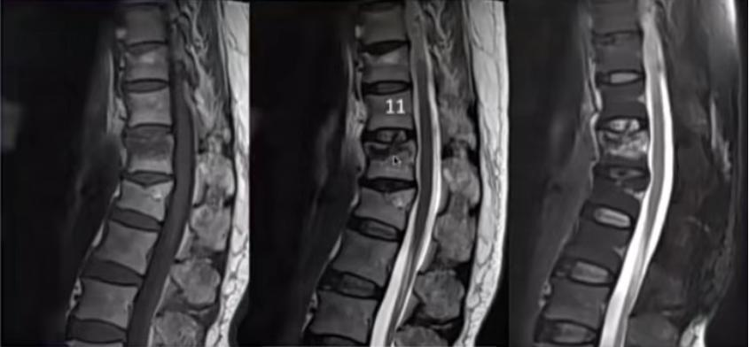

01 / 机制
三个层面同时出问题
01
血供被破坏
骨折端周围的血管受损，负责修复的细胞到不了现场，新骨无从生成。
02
断端一直在动
椎体每天都在承重。骨断端持续错动，就像反复被掰开的伤口。
03
全身“土壤”没改善
不疼了，但骨质疏松没治。骨质量继续下降——下一次骨折已经在路上。
02 / 读片
影像上那处亮影，只是一个线索
X 线上它有时表现为一条透亮带（裂隙征）；MRI 上则是含液与水肿的高信号。不管哪种片子，指向的是同一件事：那里没长好——但看到它，不等于确诊。

看到什么
病变椎体变扁
T2WI 压脂上椎体内与邻近终板呈高信号（含液 / 水肿），T1WI 上低信号。
意味着什么
不愈合的线索
骨断端之间仍有水肿与液体信号——是线索，不等于确诊。
还要看什么
病史与体征
轻微外力、迟发疼痛、后凸、椎旁压痛；X 线 / CT 看骨性结构，骨密度看“土壤”。
03 / 治疗
确诊不愈合，不等于必须开刀
治疗是分层判断，不是“开刀 / 不开刀”的二选一。但无论选哪条路，抗骨质疏松药物治疗都要同时做。
01
保守治疗
压缩程度轻、疼痛可控、无进行性塌陷或神经损害：支具保护 + 镇痛 + 规范抗骨质疏松治疗。
02
微创强化 PVP / PKP
保守无效的剧烈疼痛，或不能耐受长期卧床的高龄患者。核心是快速止痛、早期离床。
03
开放手术（少数）
进行性后凸、不稳定、神经损害：需专科评估手术指征。
PKP 能部分恢复椎体高度与后凸角，影像学渗漏报道约 18%–30%；PVP 操作更快，渗漏报道约 40%–55%，多数无临床症状。注入量胸椎一般 2–4 mL、腰椎 4–6 mL，透视下低压缓慢推注。